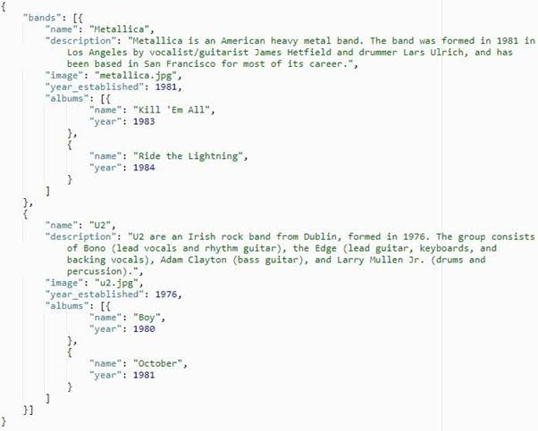

Structured Data · داده ساختاریافته
ساختار مشخص و از پیش تعریفشده دارد
Rows = Samples (نمونهها)
Columns = Features (ویژگیها)
- هر ستون معنی مشخصی دارد
- ذخیرهسازی آسان در دیتابیس
- الگوریتمهای کلاسیک ML این شکل را میخواهند
Structured Data · مثالها
کجا Structured Data میبینیم؟
- اطلاعات مشتریان (CRM)
- تراکنشهای بانکی
- دادههای فروش
- داده سنسورهای صنعتی
Linear Regression · Logistic Regression
Decision Tree · Random Forest
همه انتظار Rows × Columns دارند.
Unstructured Data · داده غیرساختاریافته
ساختار جدولی مشخص ندارد، اما ارزشمند است
الگوریتمها مستقیما با این دادهها کار نمیکنند،
اما میتوان آنها را به عدد تبدیل کرد.
Text → NLP → Numbers
Image → Vision → Numbers
Audio → Signal Processing → Numbers
Text
 Image
Audio
Video
Image
Audio
Video
Unstructured · Image Data
داده تصویری
- تصویر پزشکی (MRI, X-ray)
- عکس ماهوارهای
- عکس محصول فروشگاهی
- تشخیص چهره
مثال: Midjourney روی میلیونها تصویر آموزش دید
Unstructured · Audio Data
داده صوتی
- دستیار صوتی (Siri, Alexa)
- تبدیل گفتار به متن
- تشخیص موسیقی
- ترجمه گفتاری
مثال: Speech Recognition در گوشیهای هوشمند.
Unstructured · Video Data
داده ویدئویی
- دوربینهای نظارتی
- خودروهای خودران
- تحلیل رفتار مشتری
- ورزش و بیومکانیک
Video = Sequence of Images + Audio
Semi-Structured Data · داده نیمهساختاریافته
نه کاملا جدول، نه کاملا بدون ساختار

{
"name": "Ali",
"age": 25,
"city": "Tehran"
}
- JSON (خروجی APIها)
- XML
- HTML
چالش اصلی
بیشتر الگوریتمهای یادگیری ماشین به اعداد نیاز دارند.
اشتباه رایج:
داده ساختار نیافته نمیتواند پردازش شود.
واقعیت:
Unstructured
↓ Feature Extraction
↓ Numbers → ML
جمعبندی
تصویر کامل
Structured
↓
Tables
CSV · Database · Excel
Semi-Structured
↓
JSON · XML · HTML
Unstructured
↓
Text · Image · Audio · Video
Unstructured → Feature Extraction → Numbers → ML Model